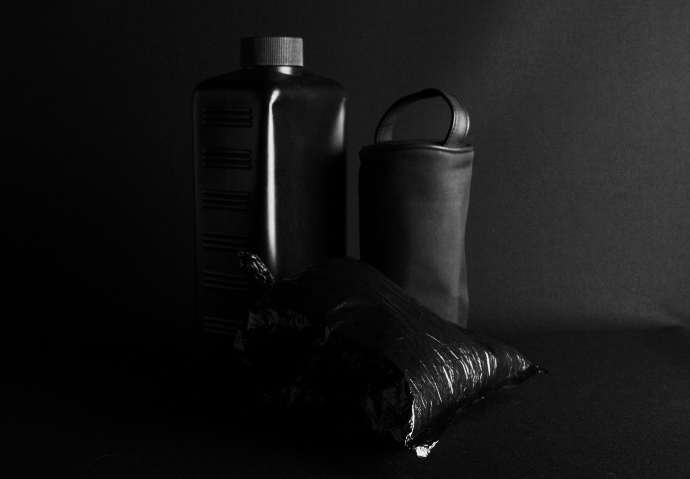
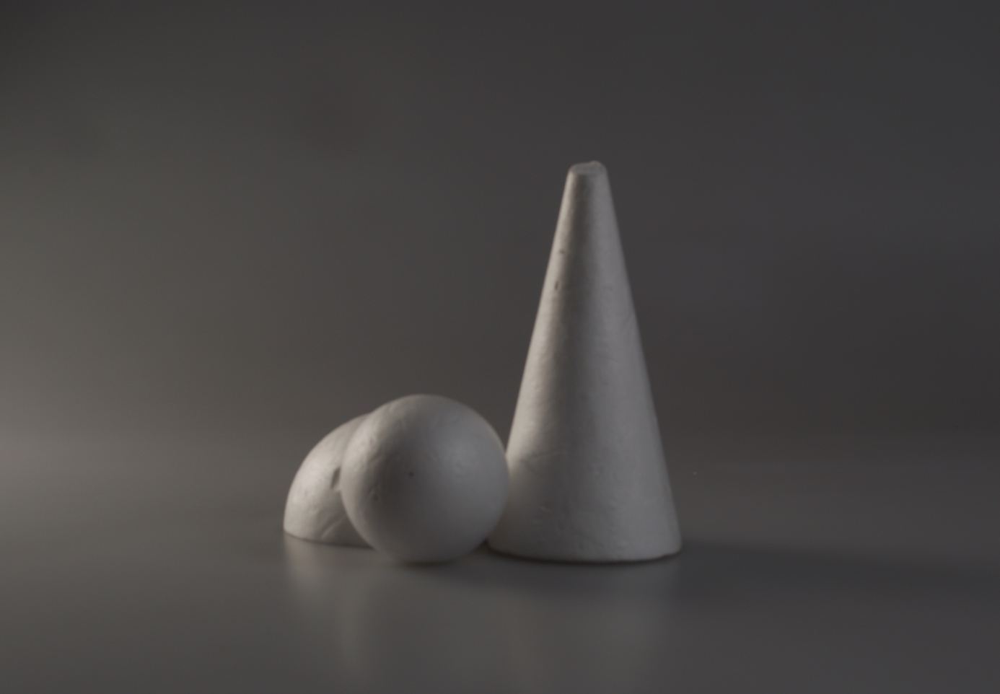
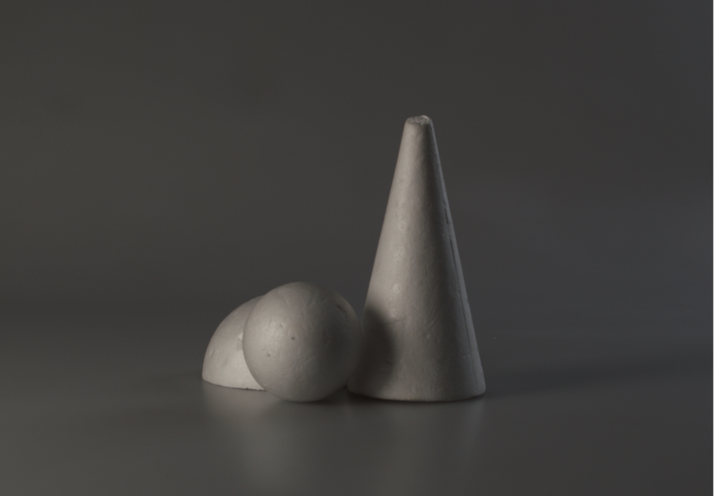
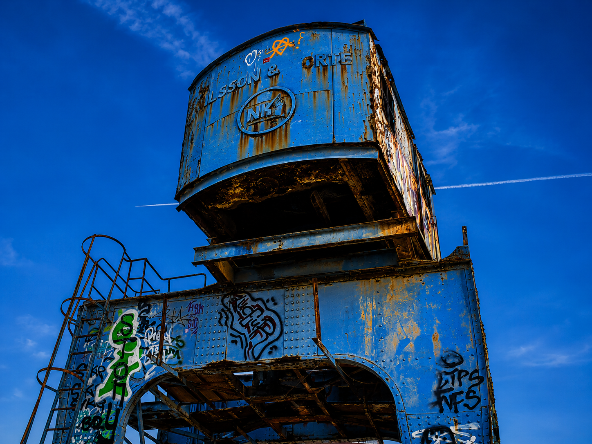
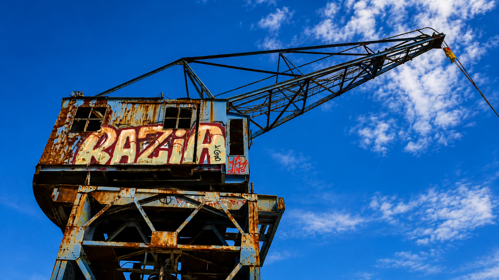
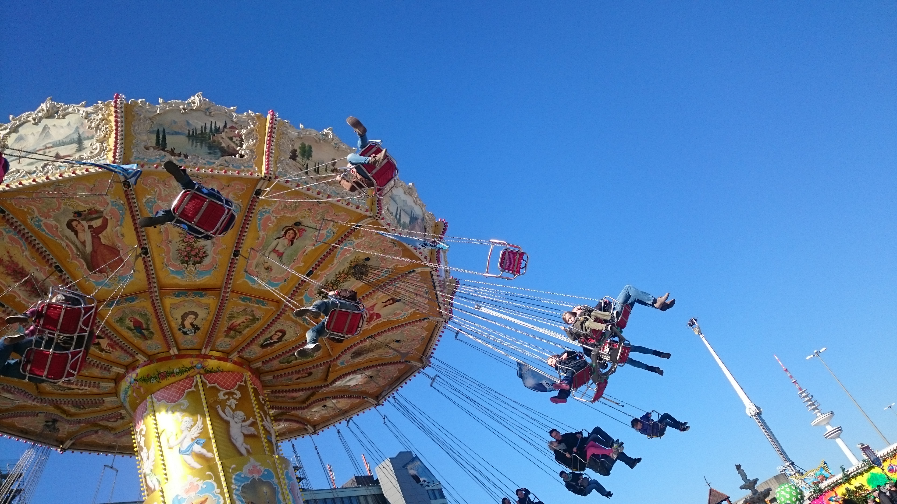
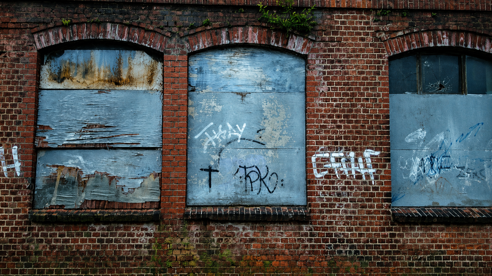
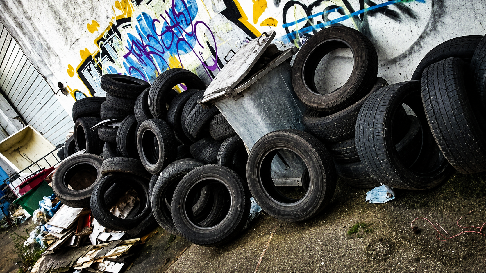

Fotografien
Identität durch Licht
Ich halte Momente, Produkte und Orte mit einem Gespür für Licht, Komposition und Details fest. Mein Fokus liegt auf authentischen Fotografien, die Emotionen wecken, Geschichten erzählen und durch ihre klare Bildsprache nachhaltig wirken.

Kontrast


Stillleben
Blauer Kran – Hamburg


Dom – Hoch hinaus

Elmshorn – Teppich Kibek

